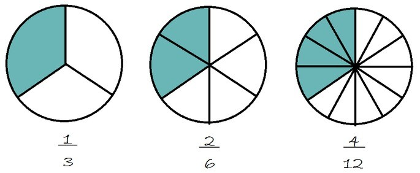

TeachForAll
Estrategias lectoras
Se presentan 10 estrategias para introducir la lectura en un niño con discapacidad visual.
7 actividadesFiguras geométricas
Propone la interacción con objetos tridimensionales en la enseñanza.
4 actividades
Suma y resta
Con ayuda de herramientas como el ábaco braille ayudamos a aprender operaciones matemáticas básicas.
4 actividades

Fracciones
Utilizar plantillas perforadas para hacer el cálculo de operaciones fraccionarias.
9 actividades